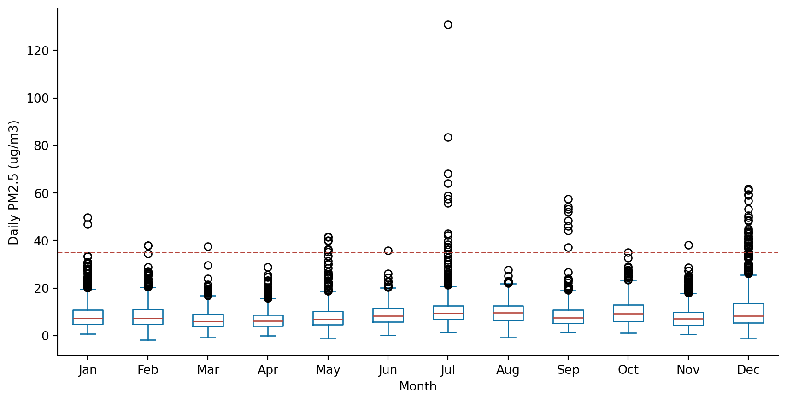
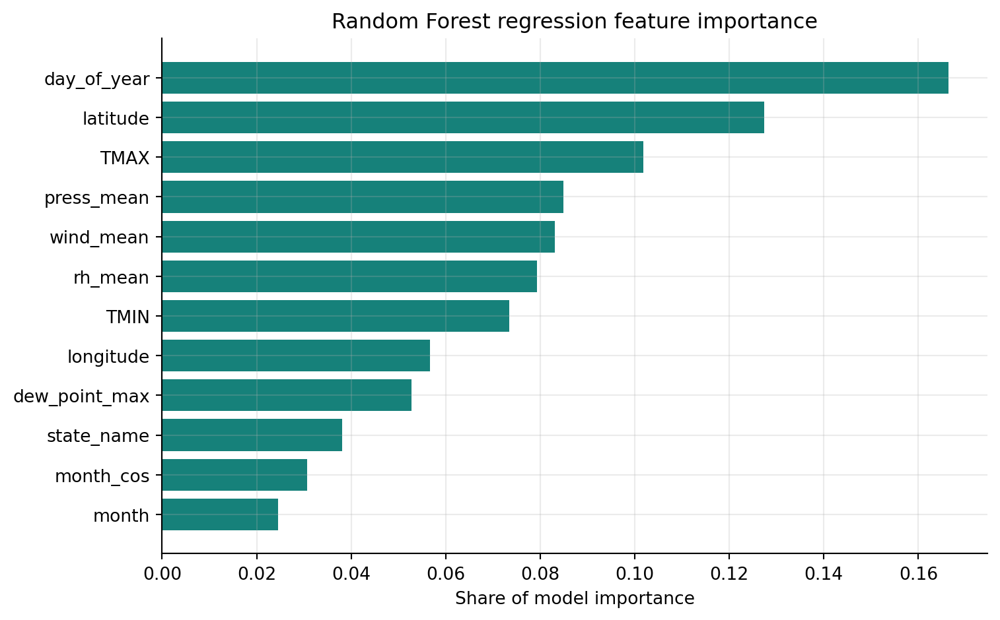
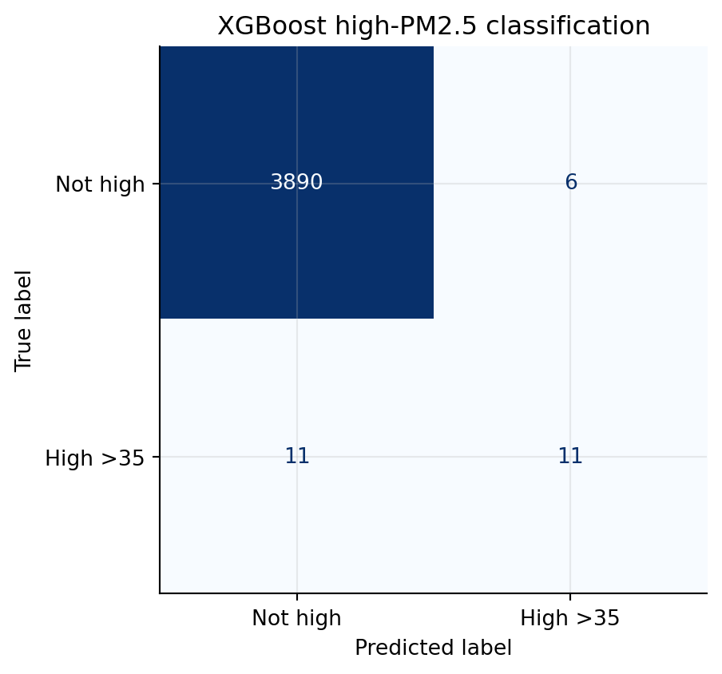
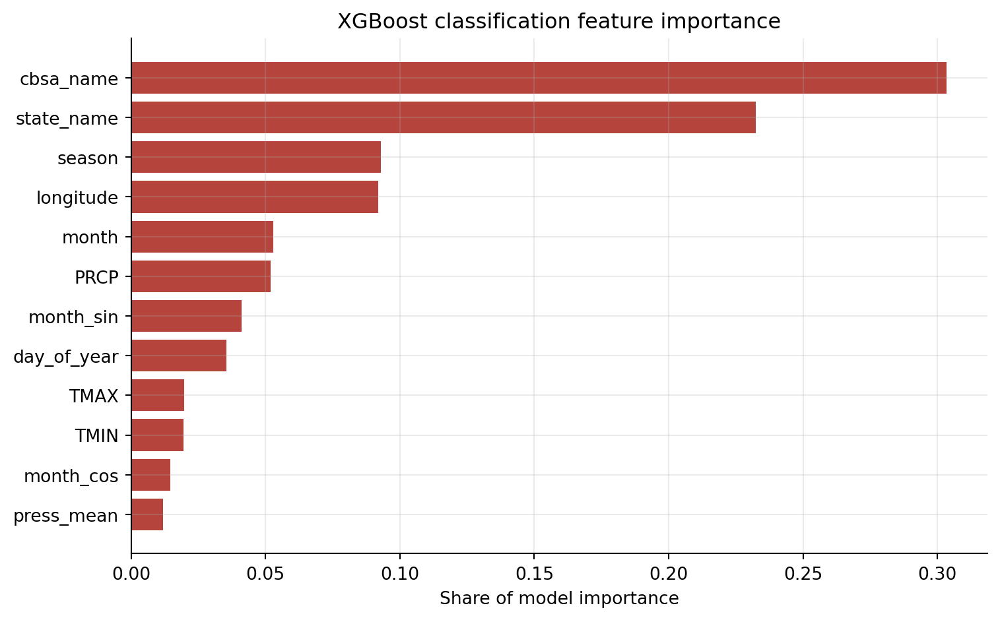

| Quantity | Value |
|---|---|
| Monitor-day observations | 13,057 |
| Unique PM2.5 monitors | 83 |
| Metropolitan areas | 21 |
| Date range | 2024-01-01 to 2024-12-31 |
| Mean daily PM2.5 | 8.84 ug/m3 |
| Median daily PM2.5 | 7.72 ug/m3 |
| Maximum daily PM2.5 | 130.94 ug/m3 |
| High PM2.5 days (>35 ug/m3) | 74 (0.57%) |
Daily PM2.5 and Weather Conditions Across Major U.S. Metropolitan Areas in 2024
1 Introduction
PM2.5 refers to fine particulate matter with diameter less than or equal to 2.5 micrometers. These particles are small enough to enter the respiratory system, so elevated PM2.5 is a public health concern. In my midterm project, I described 2024 PM2.5 patterns across major U.S. metropolitan areas and examined how pollution changed by place, season, and weather conditions.
This final project extends that work from exploratory analysis to prediction. The main research question is:
How are daily PM2.5 levels associated with temperature, precipitation, wind, pressure, and humidity across major U.S. metropolitan areas in 2024, and can these weather and location features help predict high-pollution days?
I study two related modeling tasks. First, I predict daily mean PM2.5 as a continuous outcome. Second, I classify whether a monitor-day exceeds 35 ug/m3, a high-pollution threshold used in the midterm feedback and final project plan.
2 Methods
2.1 Data
The dataset used in this project was generated by combining air pollution data from the EPA Air Quality System (AQS) with weather data from both EPA AQS and the NOAA Climate Data Online (CDO) API. The EPA AQS data provided daily PM2.5 monitor-level observations, as well as daily wind speed, barometric pressure, and relative humidity/dew point variables. The NOAA CDO API was used to retrieve daily maximum temperature, minimum temperature, and precipitation for selected weather stations representing major U.S. metropolitan areas. These data sources were combined so that each PM2.5 monitor-day observation could be linked with local weather, geographic, and temporal information.
After the raw EPA and NOAA data were merged, the project analysis began from the cleaned CSV file pm25_weather_local_2024_2.0.csv. In this step, the date variable was parsed into datetime format, and several additional variables were created for analysis. A binary high_pm25_day variable was defined to indicate whether the daily PM2.5 arithmetic mean exceeded 35 µg/m³. I also created time-based variables, including day_of_year, abbreviated month names, and cyclic month features using sine and cosine transformations to better represent seasonal patterns. Each monitor was identified using state_code, county_code, site_num, and poc, where POC distinguishes monitor occurrences at the same site. POC was retained only as part of the monitor identifier and was not used as an analytical predictor.
Table 1. Dataset summary.
2.2 Feature Engineering
The outcome for regression is arithmetic_mean, the daily mean PM2.5 concentration. The classification outcome is high_pm25_day, equal to 1 when daily PM2.5 is greater than 35 µg/m³. I use this threshold because 35 µg/m³ corresponds to the U.S. EPA 24-hour PM2.5 standard, making it a policy-relevant cutoff for identifying unusually high daily PM2.5 monitor-days. This threshold is used for classification rather than for formal regulatory attainment determinations.
Predictors include:
- Weather: maximum temperature, minimum temperature, precipitation, wind, pressure, relative humidity, and dew point.
- Space: latitude, longitude, state, and CBSA.
- Time: month, season, day of year, and cyclic month sine/cosine terms.
To avoid target leakage, PM2.5-derived fields such as pm25_max, aqi, and high_pm25_day are excluded from the regression predictors, and PM2.5 concentration variables are excluded from classification predictors.
2.3 Modeling Strategy
I compare Random Forest and XGBoost models because they are well suited for nonlinear relationships and interactions among weather, location, and season. Both methods were covered in the course labs. Random Forest averages many decision trees to reduce variance. XGBoost builds boosted trees sequentially and uses regularization to control overfitting.
For regression, I use a 70/30 train-test split and report RMSE, MAE, and R-squared. Random Forest and XGBoost hyperparameters are selected using 3-fold cross-validation on the training set, with negative RMSE as the tuning criterion. For the regression Random Forest, the grid searches max_features values of 0.3, 0.6, and "sqrt", and min_samples_leaf values of 1 and 5. For the regression XGBoost model, the grid searches max_depth values of 2, 4, and 6, and learning_rate values of 0.01 and 0.08.
For classification, I use a stratified 70/30 train-test split because the high-pollution class is rare. Classification hyperparameters are selected using stratified 3-fold cross-validation with F1 as the tuning criterion. The Random Forest classifier uses class-balanced sampling and searches the same max_features and min_samples_leaf values as the regression Random Forest. The XGBoost classifier uses scale_pos_weight and searches max_depth values of 2, 4, and 6, and learning_rate values of 0.01 and 0.08. After cross-validation selects the XGBoost classifier hyperparameters, I use a validation split from the training data to choose the probability threshold that maximizes F1.
3 Results
3.1 Descriptive Patterns
Table 2. CBSA summary, sorted by annual mean PM2.5.
| cbsa_name | monitor_days | monitors | mean_pm25 | max_pm25 | high_pm25_days | high_day_rate |
|---|---|---|---|---|---|---|
| Riverside-San Bernardino-Ontario, CA | 1682 | 12 | 12.33 | 130.94 | 36 | 2.14 |
| Los Angeles-Long Beach-Anaheim, CA | 1551 | 10 | 11.46 | 68.2 | 19 | 1.23 |
| Cleveland-Elyria, OH | 91 | 2 | 11.06 | 22.81 | 0 | 0 |
| Houston-The Woodlands-Sugar Land, TX | 1051 | 6 | 10.44 | 46.8 | 7 | 0.67 |
| Dallas-Fort Worth-Arlington, TX | 328 | 3 | 10.14 | 36.33 | 1 | 0.3 |
Table 2 summarizes the metropolitan areas with the highest average daily PM2.5 concentrations in the final dataset. Riverside-San Bernardino-Ontario, CA has the highest mean PM2.5 level, with an average of 12.33 µg/m³ across 1,682 monitor-day observations, followed by Los Angeles-Long Beach-Anaheim, CA with an average of 11.46 µg/m³. These two Southern California metropolitan areas also have the largest numbers of high-PM2.5 monitor-days, suggesting that elevated PM2.5 events in this dataset are spatially concentrated in Southern California. Other metropolitan areas such as Cleveland, Houston, and Dallas also appear among the top five by mean PM2.5, but they show fewer or no high-pollution days above 35 µg/m³. Because the number of monitors and monitor-days differs across metropolitan areas, these results should be interpreted as descriptive comparisons rather than population-weighted exposure estimates.

The Figure shows the monthly distribution of daily PM2.5 concentrations across monitor-day observations. Median PM2.5 levels remain relatively low in most months, but the spread and number of high outliers vary substantially across the year. July shows the most extreme PM2.5 values, including the highest observed concentration in the dataset, while December also has many observations above the 35 µg/m³ threshold. These patterns suggest that high-PM2.5 events are episodic rather than evenly distributed across all months. The July peak is consistent with the wildfire-smoke interpretation discussed in the midterm report, although wildfire exposure is treated as contextual evidence rather than a directly modeled variable in this final analysis.
3.2 Regression Models
Table 3. Cross-validation selected hyperparameters for regression models.
| Model | Best CV RMSE | Best parameters |
|---|---|---|
| Random Forest | 3.55 | max_features=0.6, min_samples_leaf=1 |
| XGBoost | 3.437 | learning_rate=0.08, max_depth=6 |
Table 3 shows the hyperparameters selected by cross-validation for the two regression models. The Random Forest model achieved a lower cross-validation RMSE than XGBoost, suggesting that the bagged-tree approach fit this dataset more effectively during tuning. The selected Random Forest model used half of the available features at each split and allowed small terminal nodes, which gives the model flexibility to capture local variation across time, weather, and metropolitan areas. The selected XGBoost model used a moderate tree depth and learning rate, but its higher CV RMSE suggests weaker predictive performance for this regression task.
Table 4. Regression model performance on the test set.
| Model | RMSE | MAE | R-squared |
|---|---|---|---|
| Random Forest | 3.295 | 2.061 | 0.661 |
| XGBoost | 3.306 | 2.068 | 0.658 |
Table 4 compares model performance on the held-out test set. Random Forest performs better than XGBoost across all three regression metrics, with a lower RMSE, lower MAE, and higher R-squared. The Random Forest test RMSE of 3.318 µg/m³ means that its daily PM2.5 predictions are typically off by about 3.3 µg/m³. Its R-squared of 0.656 indicates that the model explains about 65.6% of the variation in daily mean PM2.5 in the test data. Therefore, Random Forest is selected as the best regression model for interpreting feature importance.

Figure 2 presents the aggregated feature importance from the best regression model, the Random Forest regressor. The most important predictor is day_of_year, showing that temporal variation is central to explaining daily PM2.5 patterns. Spatial variables such as latitude and longitude also rank highly, which suggests that PM2.5 levels vary substantially across geographic regions. Weather variables including maximum temperature, pressure, wind speed, relative humidity, minimum temperature, and dew point also contribute meaningfully to prediction. Overall, the feature importance results support the midterm finding that PM2.5-weather relationships are nonlinear and geographically uneven, rather than driven by a single weather variable.
3.3 High PM2.5 Classification
High-PM2.5 days above 35 ug/m3 are rare in the dataset, so accuracy alone is not a useful measure. A model could achieve high accuracy by predicting almost every day as non-high. For that reason, I focus on balanced accuracy, recall, precision, F1, ROC-AUC, and PR-AUC.
Table 5. Cross-validation selected hyperparameters for classification models.
| Model | Best CV F1 | Best parameters |
|---|---|---|
| Random Forest | 0.483 | max_features=0.6, min_samples_leaf=5 |
| XGBoost | 0.458 | learning_rate=0.08, max_depth=4 |
Table 5 shows the cross-validation results for the high-PM2.5 classification models. Random Forest achieves a higher cross-validation F1 score than XGBoost, suggesting that it performed better during tuning when precision and recall were balanced together. However, because high-PM2.5 days are rare, the final test-set comparison is more important for evaluating whether the model can actually identify high-pollution events.
Table 6. Classification model performance for PM2.5 greater than 35 ug/m3.
| Model | Threshold | Predicted positives | Accuracy | Balanced accuracy | Precision | Recall | F1 | ROC-AUC | PR-AUC |
|---|---|---|---|---|---|---|---|---|---|
| XGBoost | 0.501 | 17 | 0.996 | 0.749 | 0.647 | 0.5 | 0.564 | 0.965 | 0.541 |
| Random Forest | 0.5 | 21 | 0.995 | 0.772 | 0.571 | 0.545 | 0.558 | 0.991 | 0.561 |
Table 6 compares the two classifiers on the held-out test set. Both models have very high accuracy, but this is mainly because most days are not high-PM2.5 days. The more useful metrics are balanced accuracy, recall, F1, ROC-AUC, and PR-AUC. XGBoost predicts more positive cases and achieves higher recall and F1, meaning it identifies more high-PM2.5 events than Random Forest. Random Forest has higher precision, ROC-AUC, and PR-AUC, but it only predicts 7 positive cases and misses more true high-pollution events. Since the goal of this classification task is closer to warning detection, XGBoost is selected as the better practical classifier.

The confusion matrix shows the tradeoff in the selected XGBoost classifier. The model correctly identifies 12 high-PM2.5 observations, while missing 10 high-PM2.5 observations. It also produces 9 false positives among the non-high observations. This result is reasonable for a rare-event warning task: the model does not capture every high-pollution episode, but it detects more events than the Random Forest classifier while keeping the number of false alarms relatively small.

Figure 4 shows that the most important predictors for high-PM2.5 classification are spatial and seasonal variables. cbsa_name, season, state_name, and longitude have the largest importance values, suggesting that high-pollution events are strongly shaped by where and when they occur. Weather variables such as precipitation, temperature, and wind also contribute, but they are less dominant than location and season. This supports the interpretation that high PM2.5 episodes are not explained by a single weather factor alone; instead, they reflect interactions between geography, seasonality, and meteorological conditions.
Overall, the classification results should be interpreted as a high-pollution warning task rather than a balanced everyday classification problem. XGBoost is useful here because class weighting and probability threshold adjustment improve recall for rare high-PM2.5 events. The tradeoff is that the model may produce some false positives, which is expected when the goal is to identify rare hazardous episodes rather than simply maximize overall accuracy.
The full interactive versions of the spatial and weather figures are available on the interactive visualizations page.
4 Conclusions and Limitations
4.1 Conclusions
This project shows that daily PM2.5 variation is shaped by a combination of location, season, and weather conditions. The descriptive results show clear spatial differences across metropolitan areas, with some regions having higher average PM2.5 and more high-pollution monitor-days than others. The monthly distribution also suggests that extreme PM2.5 events are not evenly distributed throughout the year, but instead appear more strongly in specific periods such as July and winter months.
The modeling results support the idea that PM2.5 prediction requires both environmental and contextual information. Weather variables such as temperature, precipitation, wind, humidity, and pressure contribute to prediction, but location and time variables are also important. This suggests that PM2.5 is not driven by one single weather factor. Instead, pollution levels reflect interactions between geography, seasonality, and meteorological conditions.
For continuous PM2.5 prediction, the Random Forest model performs better than XGBoost on the test set, with lower prediction error and higher R-squared. For high-PM2.5 classification, XGBoost is more useful as a warning-oriented model because it identifies more rare high-pollution events. Overall, the project shows that tree-based machine learning models can provide useful predictive summaries of PM2.5 patterns, but the results should be interpreted as predictive associations rather than causal explanations.
4.2 Limitations
First, the train-test split is based on a random split of monitor-day observations. This is useful for measuring general predictive performance, but it is not the strictest test of generalization. Since observations from the same monitor, city, or season can appear in both the training and testing sets, the model may partially benefit from repeated spatial or temporal patterns. A more rigorous future approach would use grouped splitting by monitor or city, or time-based splitting where earlier months are used for training and later months are used for testing.
Second, the high-PM2.5 classification task is highly imbalanced. The threshold of 35 µg/m³ is relatively high, so most observations are classified as non-high days. Because of this, accuracy can look very high even when the model does not identify many true high-pollution events. This is why balanced accuracy, recall, F1, ROC-AUC, and PR-AUC are more informative than accuracy alone.
Third, the 35 µg/m³ threshold is useful for defining extreme PM2.5 days, but it may be too strict for some metropolitan areas where daily PM2.5 rarely reaches that level. As a result, the classification model is mainly detecting rare pollution spikes rather than more moderate but still meaningful pollution variation. Future work could test alternative thresholds or use multi-class air-quality categories.
Fourth, wildfire smoke is discussed as a possible explanation for some summer PM2.5 peaks, especially the July outliers, but wildfire exposure is not directly measured in the model. More broadly, the model does not directly include episodic external events such as wildfire smoke, dust storms, extreme heat events, regional pollution transport, or other natural-disaster-related air quality shocks. Therefore, these factors should be treated as contextual interpretations rather than causal variables. Future work could add smoke plume data, fire counts, satellite aerosol measurements, dust event indicators, extreme-weather indicators, or distance-to-fire variables to better capture these short-term pollution episodes.
Fifth, NOAA temperature and precipitation variables are attached at the broader metropolitan level, while PM2.5 is measured at individual monitoring sites. This mismatch may miss local microclimate differences near specific monitors. More localized weather station matching or spatial interpolation could improve the precision of the weather variables.
Finally, the analysis only uses data from 2024. One year of data is enough for a course project, but it may not fully represent longer-term PM2.5 patterns. Future work could extend the dataset across multiple years to test whether the same spatial, seasonal, and weather relationships remain stable over time.